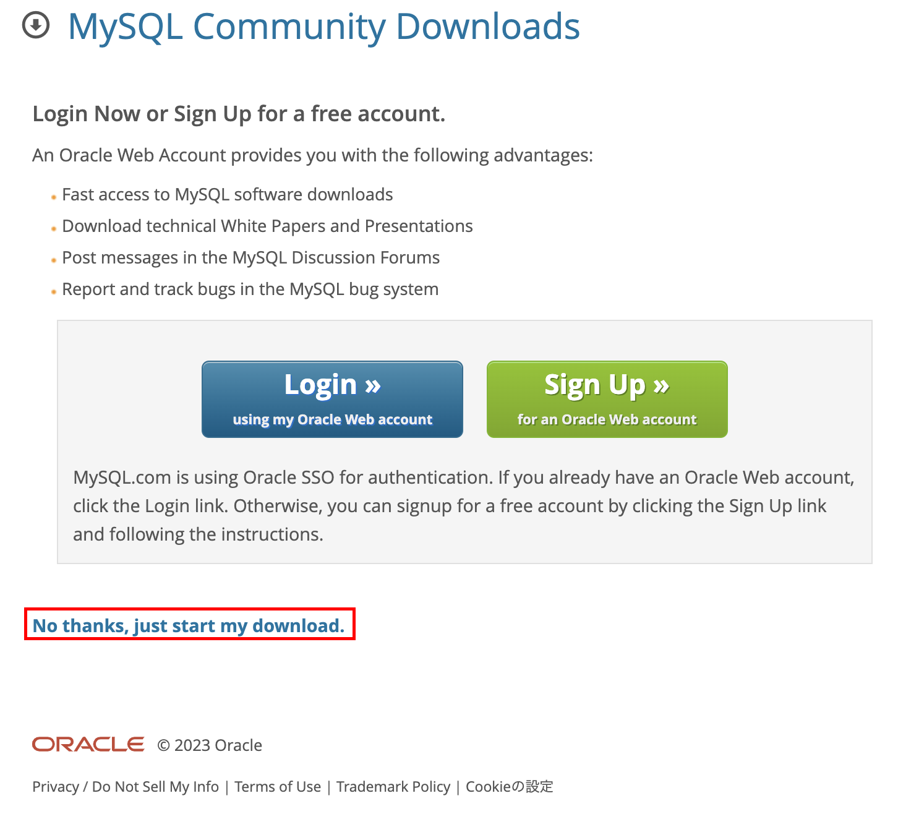
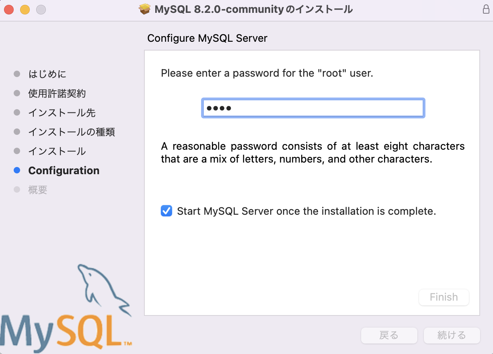
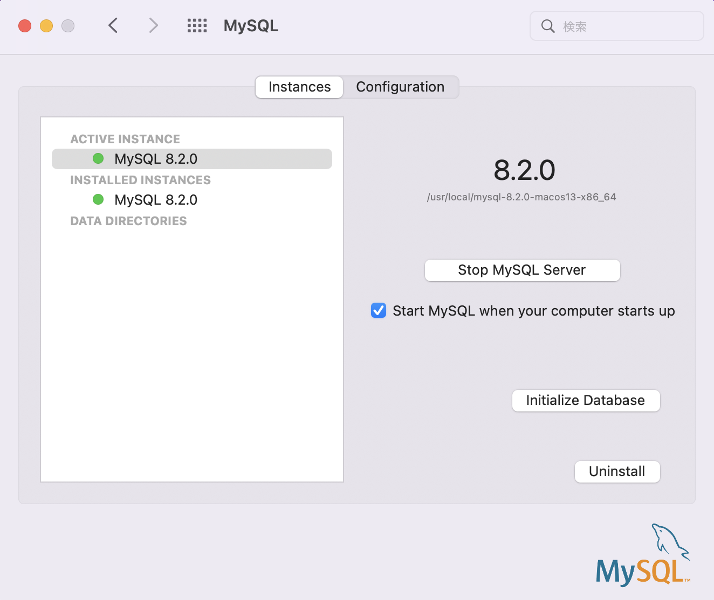

MySQL環境構築
インストール(Mac)
インストーラダウンロード
MySQLコミュニティ(https://dev.mysql.com/downloads/mysql/)[https://dev.mysql.com/downloads/mysql/]からインストーラをダウンロードする。
Version: 好きなもの
OS/OS Version: 適したもの
ダウンロードするファイル：Appleシリコンであれば「ARM」、Intel CPUであれば「x86」
ログインを要求されるが、「No thanks, just start my download.」を選択してもよい 
インストール
ダウンロードが完了したら、インストールを開始する
インストールする中でrootユーザのパスワードを設定する 
Finishをクリックして完了。
起動確認
システム環境設定からMySQLの状態が確認できる
ここから、MySQL Serverの起動・停止・初期化・アンインストールなどが可能 
Pathを通す 今回はGUIでインストールしたので、ターミナルで
mysqlコマンドを実行するためにはPathを通す必要がある。ターミナルを開いて以下を実施
vim .zshrc
#以下を追記
alias mysql=/usr/local/mysql/bin/mysql
alias mysqladmin=/usr/local/mysql/bin/mysqladmin
#.zshrcに追記後、vimを「:wq」で終了して再読み込み
source .zshrc
# 確認：先ほど設定したrootユーザのPWを入力して「>mysql」が返って来ればOK
mysql -u root -p
MySQL Workbenchのダウンロード MySQLをGUIベースで操作できるソフトウェアをダウンロード、インストールする